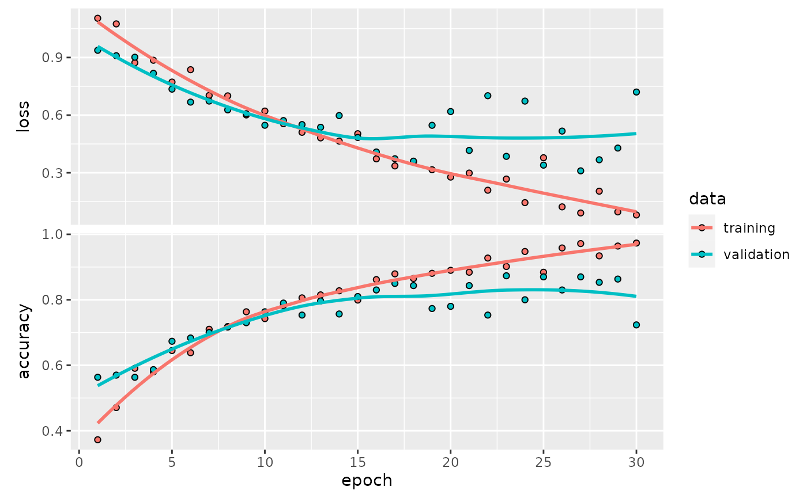

vignettes/three_cl.Rmd
three_cl.RmdThe CIFAR100 data includes some challenging image categories, and the demonstration convolutional neural network (CNN) examined in the ISLR book has relatively low accuracy over the entire set of images. In this vignette we will use the ImageArray class operations to form a subset of images of boys, roses, and chairs, train with these images, and assess accuracy.
We need two packages:
We’ll start by getting the fine-grained image types from CIFAR100 JSON.
cifmeta = fromJSON(system.file("extdata", "cif.json", package="littleDeep"))
labs = cifmeta[[1]]$features$fine_label$names
head(labs)## [1] "apple" "aquarium_fish" "baby" "bear"
## [5] "beaver" "bed"Now get the image data and work with the training set to produce an ImageArray.
if (!exists("cifdata")) cifdata = dataset_cifar100()
ciftrain = cifdata[[1]]$x
ciflabels = labs[cifdata[[1]]$y+1]
train = ImageArray(ciftrain, ciflabels)
train## ImageArray instance with 50000 images, each 32 x 32 x 3
## Image types: cattle dinosaur ... pickup_truck can
## Array elements range from 0.000000 to 255.000000.Same for the test images:
ciftest = cifdata[[2]]$x
ciftestlabs = labs[cifdata[[2]]$y+1]
test = ImageArray(ciftest, ciftestlabs)
test## ImageArray instance with 10000 images, each 32 x 32 x 3
## Image types: mountain forest ... bear tiger
## Array elements range from 0.000000 to 255.000000.We make a vector of image types of interest and use filterByType to subset the ImageArrays.
littrain = filterByType(train, c("boy", "rose", "chair"))
littest = filterByType(test, c("boy", "rose", "chair"))
littrain## ImageArray instance with 1500 images, each 32 x 32 x 3
## Image types: boy rose chair
## Array elements range from 0.000000 to 255.000000.
preview(littrain)## NULLThis can take a few minutes on a CPU. We use the default number of epochs.
rr = islr_cnn( littrain )
rr$model## Model: "sequential"
## ________________________________________________________________________________
## Layer (type) Output Shape Param #
## ================================================================================
## conv2d_3 (Conv2D) (None, 32, 32, 32) 896
## max_pooling2d_3 (MaxPooling2D) (None, 16, 16, 32) 0
## conv2d_2 (Conv2D) (None, 16, 16, 64) 18496
## max_pooling2d_2 (MaxPooling2D) (None, 8, 8, 64) 0
## conv2d_1 (Conv2D) (None, 8, 8, 128) 73856
## max_pooling2d_1 (MaxPooling2D) (None, 4, 4, 128) 0
## conv2d (Conv2D) (None, 4, 4, 256) 295168
## max_pooling2d (MaxPooling2D) (None, 2, 2, 256) 0
## flatten (Flatten) (None, 1024) 0
## dropout (Dropout) (None, 1024) 0
## dense_1 (Dense) (None, 512) 524800
## dense (Dense) (None, 3) 1539
## ================================================================================
## Total params: 914,755
## Trainable params: 914,755
## Non-trainable params: 0
## ________________________________________________________________________________
plot(rr$history)
eval_model(rr$model, littest)## [1] 0.87